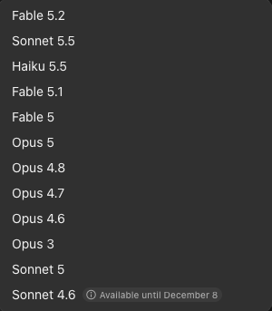
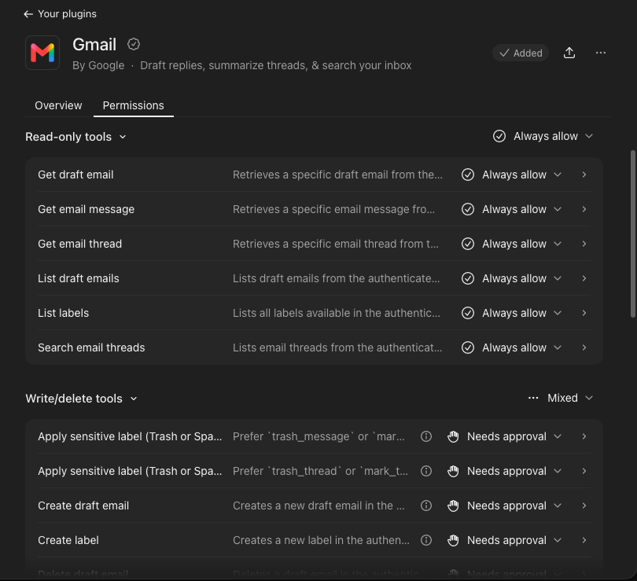
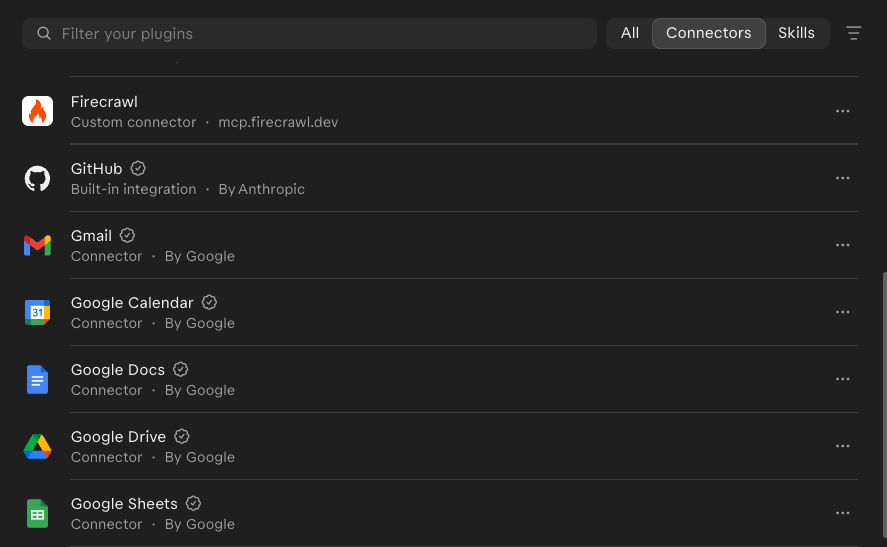
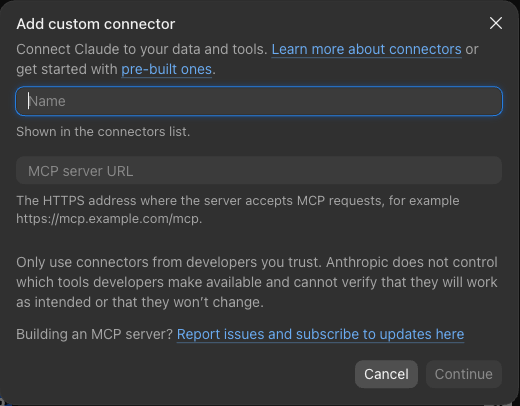

Connecting AI to your other tools opens up a whole new world of possibility... and risk.
This article covers what it means, how to go about it safely, and what you stand to gain. If you have already connected a few tools to your AI assistant (Claude, ChatGPT or Copilot), skip to the last section. It covers how to connect the ones that, until now, have been a bit tricky.
But hold on, that sounds crazy
Let's get this out of the way first. Connecting AI to your existing tools is a scary idea.
Giving Claude or ChatGPT access to your emails, your calendar, your job management system, or even your Xero account? That sounds bonkers. Think of all the ways it could go wrong. What if the AI went rogue and did something untoward with your bank details or your email? Eep.
To be frank, that's a fair reaction. So it's worth going step by step: understanding the security behind it, and setting it up properly for your team.
How connections work
The most common way to connect an AI assistant to another tool is called an MCP (Model Context Protocol). More and more software companies are rolling them out.
I've heard a few metaphors for this, involving bouncers and hotel concierges. The one I think works best is a car at a drive-through.
Your AI assistant is the car, and the MCP is the drive-through. Every drive-through works the same way. There's a menu, a speaker to place your order, and a window where they hand over the goods. The car never goes into the restaurant. It places the order and takes what comes out of the window.

AI-generated illustration.
The car can visit any number of drive-throughs and the format is always the same: McDonald's, KFC, Guzman y Gomez. Or in business terms: Gmail, Outlook, Simpro, ServiceM8. What changes is the menu.
And there is a menu. You can't get absolutely everything you want, only what's on it. (Although I did once order a Pounder meal from McDonald's. Not worth it.)
Take Gmail. You can have Claude or ChatGPT read your emails, categorise them, draft replies and send them. But you can't get it to update your email signature. It's not on the menu.
Context is king
AI can only help you as much as it understands your situation. Without connections, you give it that context yourself: you paraphrase, or paste in static bits of information that are out of date the moment you've copied them.
Once it's connected, it can look up the real data itself. It's always current, and you no longer have to act as a porter, carrying information from one system to another.
That means the answers you get are tailored to your reality. They aren't generic. They're based on up-to-date, real information.
Where it gets really interesting is when you combine sources. With Xero and your job management system both connected, you can ask which jobs are complete but not yet invoiced, and which work is most profitable for you. Or it can read an email, check your calendar, find a time that suits for a meeting and draft a reply, ready for you to approve.
A thought partner
Giving your assistant context changes how you prompt it. Instead of laying the groundwork every time, you can ask short, direct questions:
- Based on everything you can see, my goal this quarter is X. How should I go about it?
- I want gross profit of 36% across all my jobs. Which jobs are stopping me, and why?
- If I could make one change in the business to improve customer retention, what would it be?
At its simplest level, AI works like autocomplete, predicting the next thing along. But the most advanced models are extraordinarily capable, and can reason through a problem for a long time.
For questions like these, it's worth switching to one of the higher models:
- In Claude, that's Opus or Fable.
- In ChatGPT, it's GPT-6 Astra.
- In Copilot, it's Think Deeper.

Claude's model picker.
If you're not sure where to start, connect as much as you're comfortable with, then ask your assistant how it can help you based on everything it can now see. You might be surprised.
Start slowly
The best way to add connectors is slowly at first, gaining confidence as you go. That goes for the number of connectors, and for the permissions you give each one.
If you're the administrator for your business, you can add and restrict connectors for the whole team. In Claude and ChatGPT's business plans, for example, you can let a connector read your job management system or your emails but block it from writing anything back. It can analyse what's there, but it can't create anything or make changes.

Permissions for the Gmail connector in Claude. Here, reading is always allowed, and creating or changing things needs approval first. You can set each tool yourself, and an admin can set them for the whole team.
As you gain confidence and trust, you can open things up for yourself or your team. It's another good reason to be on a business plan (Team or Enterprise in Claude, Business or Enterprise in ChatGPT), so that everyone in the business is working the same way.
How to add connectors
The common ones. Go to the connectors section of your assistant and browse what's available. That will get you started with most of them.

Connectors in Claude's settings. Most are made by the software company itself. Custom connectors show the web address you added.
Smaller, more specialised tools. If a tool isn't in the list, it may still have an MCP you can add as a custom connector. To find out, search for "MCP for [your tool's name]". If one exists, it will give you a URL to paste into the custom connector section of your assistant.

Adding a custom connector in Claude: give it a name and paste in the URL.
Tools with no MCP. Fear not, there may be other ways. Connector platforms such as SyncHub or Zapier give you access to many more tools. Some have a free starting tier, but expect a monthly or usage-based fee. Search through them and you might find what you're looking for.
Tools with an API. If the tool has an API, you can code your own MCP, or get us to build one for you.
Any website. I recently came across a tool called Pomerado that turns any website into an MCP. That lets your assistant work with the site in a structured, repeatable way, doing the same thing every time rather than guessing. That could be very useful for filling in forms or entering information into portals, one of the most common and cumbersome admin jobs going.
One place to work
As you connect more tools and give them more scope, something shifts. You start living in your assistant, and have it go and action things in your other business systems. One interface, one place to focus your efforts.
That's why some software companies are trying to limit connectors, to keep you living inside their tools so they stay relevant.
Salesforce has already done it, restricting how other AI tools can use Slack data in 2025.
I can understand why they would. But it might be futile.